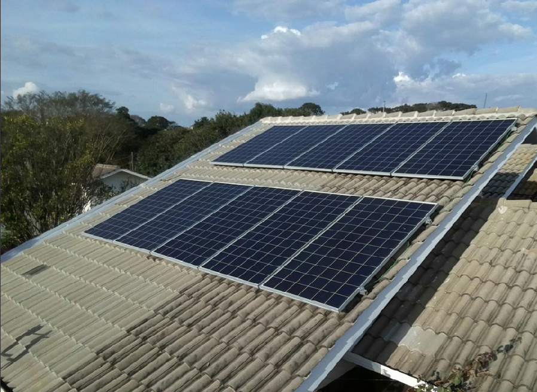

O que é a Energia rural?
Energia rural refere-se ao fornecimento e uso de eletricidade em áreas rurais, essencial para atividades como agricultura, pecuária e aquicultura. Essa energia pode vir de fontes convencionais, como a rede elétrica, ou de fontes renováveis, como solar, eólica e biomassa. A energia rural é crucial para modernizar práticas agrícolas, permitindo o uso de tecnologias que aumentam a produtividade, como irrigação automatizada e maquinário. Além disso, melhora a qualidade de vida dos habitantes do campo, proporcionando acesso à iluminação e comunicação. A adoção de fontes renováveis é especialmente importante em áreas onde a rede elétrica é limitada, promovendo autossuficiência e resiliência. Assim, a energia rural impulsiona a economia local e contribui para a sustentabilidade ambiental e o desenvolvimento social das comunidades.
A importância da eletricidade no meio rural
A eletricidade é essencial no meio rural, impulsionando o desenvolvimento econômico e social das comunidades. Ela permite a modernização da agricultura por meio do uso de equipamentos como sistemas de irrigação e máquinas de colheita, aumentando a produtividade. Além disso, é crucial para a conservação de alimentos com refrigeradores e melhora as condições de manejo na pecuária. Proporciona também iluminação e acesso à comunicação, elevando a qualidade de vida dos moradores. A eletrificação rural promove a inclusão social e a autossuficiência, integrando o campo e a cidade e contribuindo para um desenvolvimento sustentável.
🌞 Energia Solar
A energia solar é uma das fontes mais promissoras no meio rural. Através da instalação de painéis solares fotovoltaicos, propriedades rurais podem gerar sua própria eletricidade, reduzir custos com energia e se tornar autossuficientes. É uma alternativa limpa, sustentável e ideal para regiões com alta incidência solar.
🌬️ Energia Eólica
A energia eólica é viável em regiões com ventos constantes. Pequenas turbinas eólicas podem ser instaladas em propriedades para gerar eletricidade de forma complementar à rede elétrica. Essa fonte de energia é renovável, silenciosa e contribui para a redução das emissões de carbono.
💧 Hidrelétricas de Pequeno Porte
Essas pequenas centrais hidrelétricas (PCHs) aproveitam o fluxo de rios e córregos em áreas rurais para gerar energia de forma contínua e com baixo impacto ambiental. São ideais para comunidades com disponibilidade hídrica local.
🌱 Biomassa
A biomassa utiliza resíduos agrícolas, como palha, bagaço de cana, e também dejetos animais, para gerar energia térmica ou elétrica. Essa alternativa reduz o desperdício no campo e é uma solução eficiente para o aproveitamento de sobras da produção.
♻️ Geração de Energia a partir de Resíduos
A conversão de resíduos orgânicos, como restos de alimentos e esterco animal, por meio da digestão anaeróbica, gera biogás — um combustível rico em metano. Essa abordagem promove a sustentabilidade, gestão eficiente dos resíduos e geração de energia limpa.
🔬 Curiosidade Energética: O Poder do Esterco de Porco
Você sabia que o esterco de porco pode virar eletricidade? Através do processo de biodigestão, os dejetos suínos são colocados em biodigestores que fermentam o material e produzem biogás, uma mistura rica em metano. Esse gás pode ser utilizado em geradores para produzir energia elétrica ou térmica.
Em muitas propriedades do interior do Brasil, como em granjas no Paraná e Santa Catarina, o uso de biodigestores com esterco de porco já é realidade. Além de gerar energia para abastecer a fazenda inteira, o sistema ainda fornece biofertilizantes de alta qualidade, reduzindo o uso de produtos químicos e o impacto ambiental.
Essa tecnologia transforma um resíduo antes considerado problema em solução energética, promovendo a sustentabilidade e a economia circular no campo.